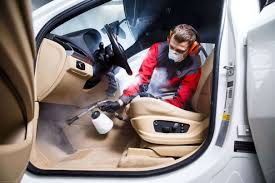

Как почистить салон подручными средствами: сода, уксус и лайфхаки

Необязательно покупать дорогую автохимию, чтобы поддерживать чистоту в салоне.
Обычные подручные средства, которые есть на каждой кухне, помогут справиться с пятнами, запахами и пылью.
Сода и уксус — самые универсальные помощники. Разберёмся, как их правильно использовать.
1. Сода против запахов
Сода отлично впитывает неприятные запахи. Посыпьте коврики или обивку сидений тонким слоем соды, оставьте на 15–20 минут, а затем тщательно пропылесосьте. Запах сигарет, еды или сырости станет гораздо слабее или исчезнет полностью.
2. Уксус для стёкол и пластика
Разведите столовый уксус с водой в пропорции 1:1 и залейте в пульверизатор. Этим раствором можно протереть внутренние поверхности стёкол, пластик панели и даже зеркала. Уксус хорошо убирает налёт и разводы, оставляя поверхность чистой и блестящей.
3. Чистка пятен на сиденьях
Смешайте немного соды с водой до состояния кашицы и нанесите на пятно от кофе, чая или еды. Аккуратно потрите щёткой и оставьте на 10 минут. После этого промокните влажной тряпкой. Метод работает на тканевой обивке и не оставляет разводов.
4. Удаление неприятного запаха кондиционера
Если при включении кондиционера в салоне появляется неприятный запах, можно использовать уксусный раствор. Опрыскайте воздухозаборники (снаружи и внутри), а затем включите систему на рециркуляцию на несколько минут. Уксус убьёт бактерии и грибок, которые вызывают запах.
5. Сода для чистки кожи и пластика
Если развести соду в воде и смочить тряпку, можно аккуратно протереть пластиковые детали, бардачок или дверные карты. Главное — не использовать слишком много порошка, чтобы не поцарапать поверхность. Для кожаных сидений такой способ тоже подойдёт, если протирать очень мягкой тканью.
Полезный лайфхак: смешайте соду с несколькими каплями эфирного масла (например, лимонного) и рассыпьте немного смеси в салоне. Через пару часов уберите — и машина наполнится приятным ароматом.
Итог: сода и уксус — простые и дешёвые помощники, которые могут заменить половину автохимии. С их помощью легко убрать запахи, пятна и налёт, сделав салон свежим и чистым без лишних затрат.
1. Сода против запахов
Сода отлично впитывает неприятные запахи. Посыпьте коврики или обивку сидений тонким слоем соды, оставьте на 15–20 минут, а затем тщательно пропылесосьте. Запах сигарет, еды или сырости станет гораздо слабее или исчезнет полностью.
2. Уксус для стёкол и пластика
Разведите столовый уксус с водой в пропорции 1:1 и залейте в пульверизатор. Этим раствором можно протереть внутренние поверхности стёкол, пластик панели и даже зеркала. Уксус хорошо убирает налёт и разводы, оставляя поверхность чистой и блестящей.
3. Чистка пятен на сиденьях
Смешайте немного соды с водой до состояния кашицы и нанесите на пятно от кофе, чая или еды. Аккуратно потрите щёткой и оставьте на 10 минут. После этого промокните влажной тряпкой. Метод работает на тканевой обивке и не оставляет разводов.
4. Удаление неприятного запаха кондиционера
Если при включении кондиционера в салоне появляется неприятный запах, можно использовать уксусный раствор. Опрыскайте воздухозаборники (снаружи и внутри), а затем включите систему на рециркуляцию на несколько минут. Уксус убьёт бактерии и грибок, которые вызывают запах.
5. Сода для чистки кожи и пластика
Если развести соду в воде и смочить тряпку, можно аккуратно протереть пластиковые детали, бардачок или дверные карты. Главное — не использовать слишком много порошка, чтобы не поцарапать поверхность. Для кожаных сидений такой способ тоже подойдёт, если протирать очень мягкой тканью.
Полезный лайфхак: смешайте соду с несколькими каплями эфирного масла (например, лимонного) и рассыпьте немного смеси в салоне. Через пару часов уберите — и машина наполнится приятным ароматом.
Итог: сода и уксус — простые и дешёвые помощники, которые могут заменить половину автохимии. С их помощью легко убрать запахи, пятна и налёт, сделав салон свежим и чистым без лишних затрат.